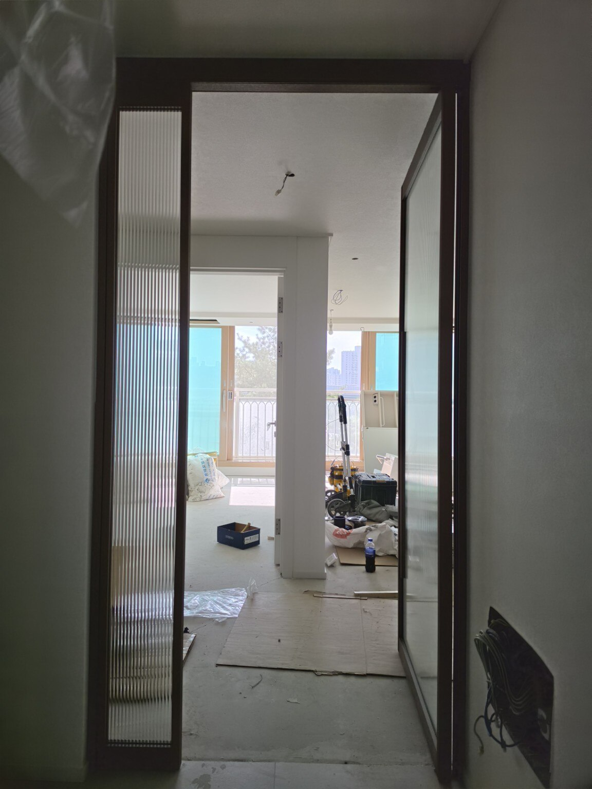
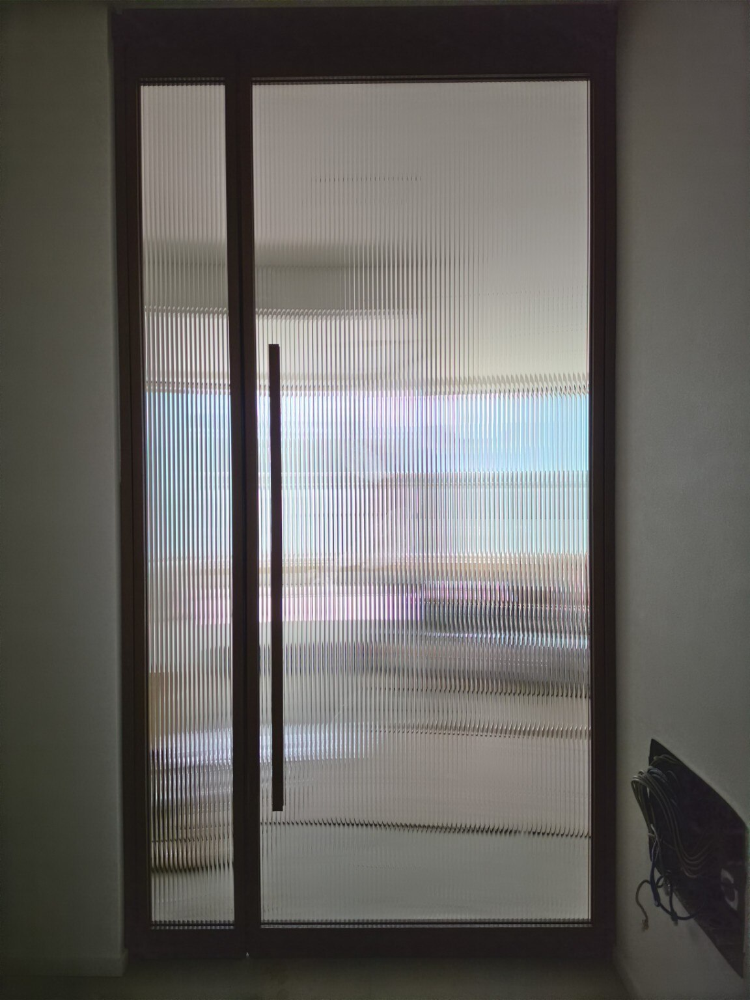
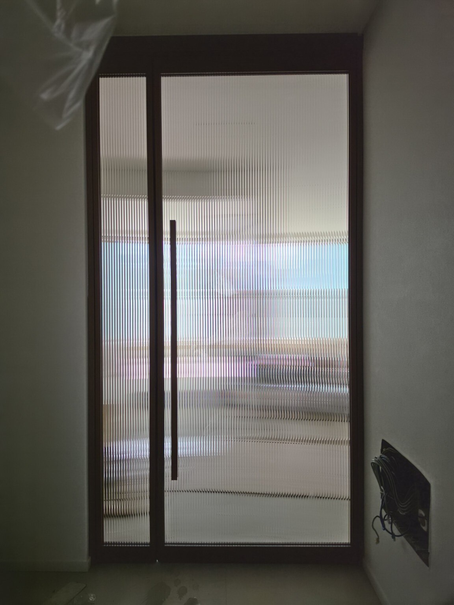
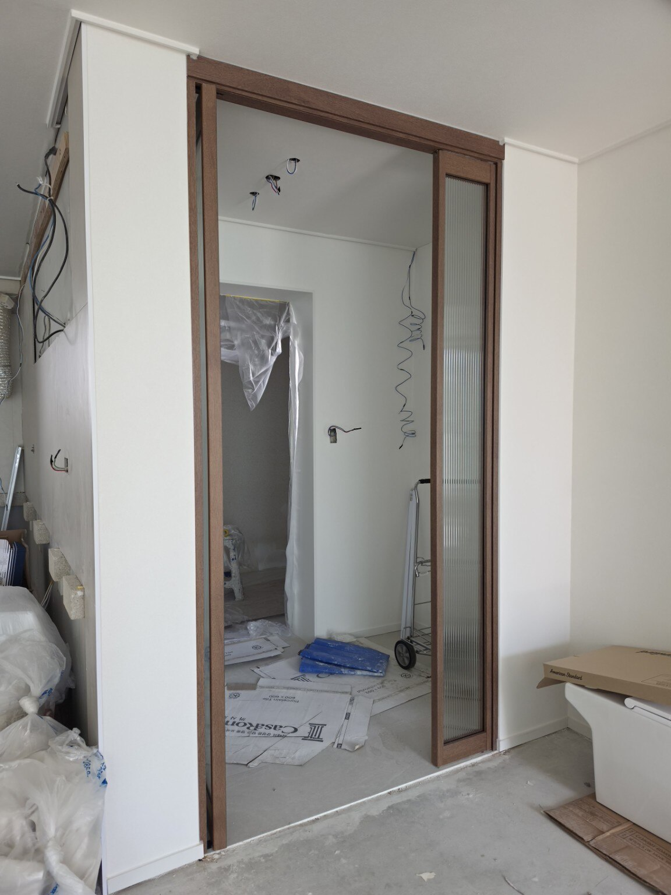
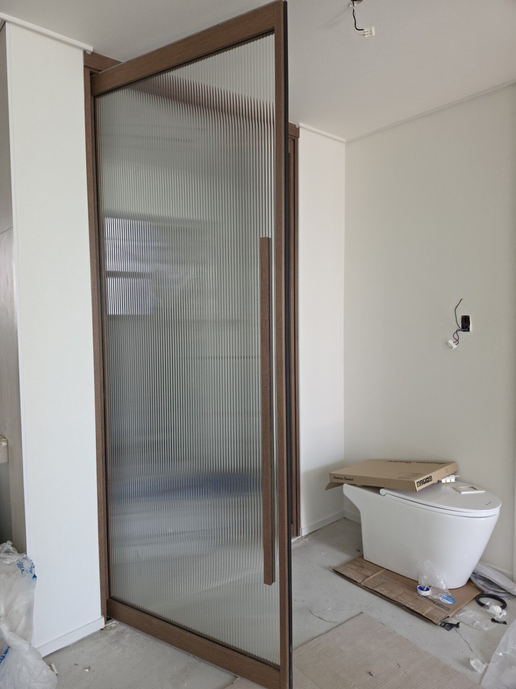
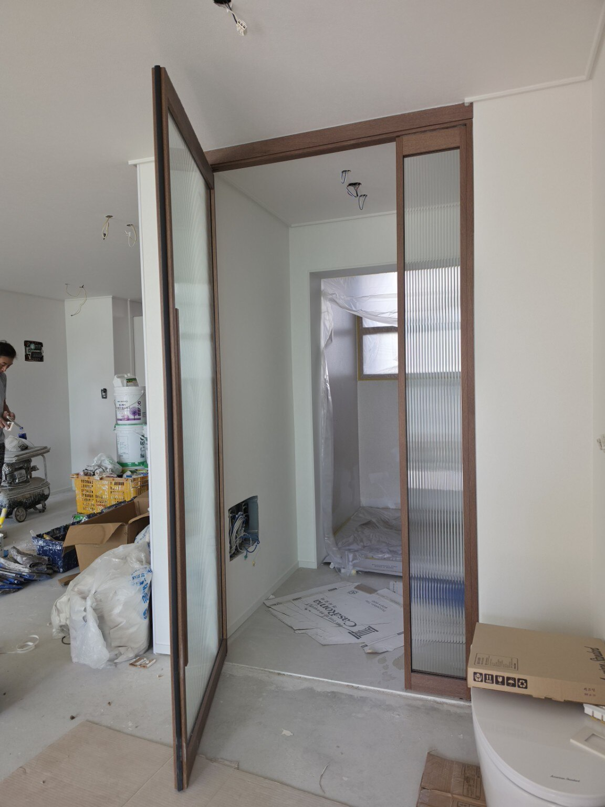
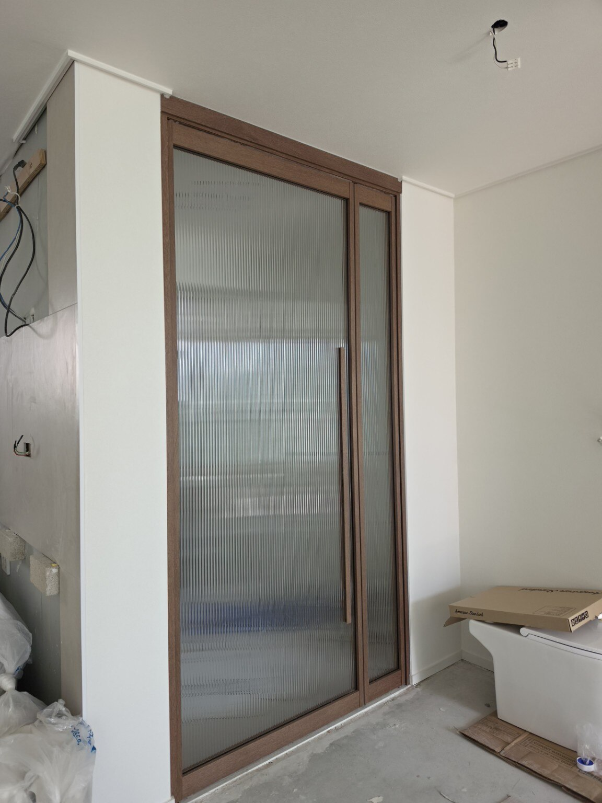
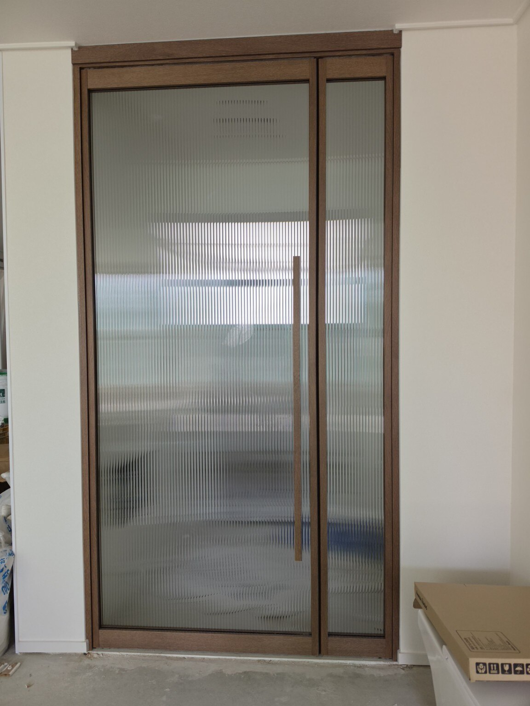
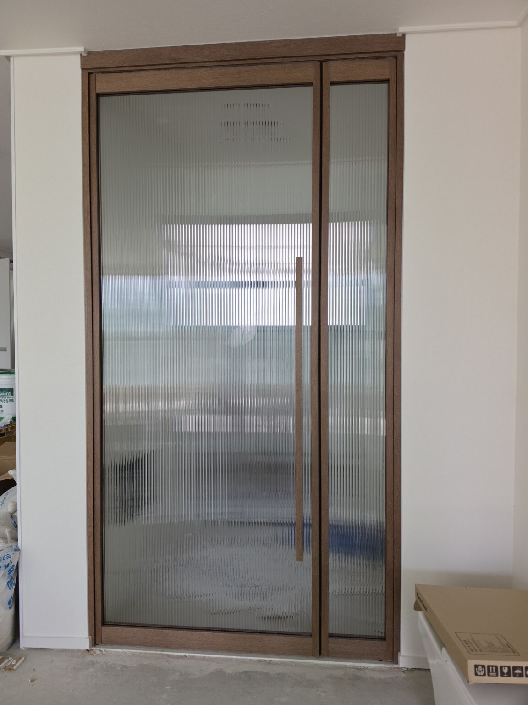

홈 › 현관중문 시공사례
인덕원 센트럴자이 204동 32평
긴 손잡이가 돋보이는 비대칭 양개 현관중문
영림 184번 우드 색상과 모루유리를 조합하고, 세로로 길게 뻗은 손잡이를 포인트로 적용해 현관 입구의 비례감과 고급스러운 분위기를 살린 시공입니다.
현장 : 인덕원 센트럴자이 204동 32평형
형태 : 양방향 비대칭 양개 여닫이
색상 : 영림 184번
유리 : 모루유리
디자인 포인트 : 길게 뻗은 세로형 손잡이
긴 손잡이가 만드는 고급스러운 첫인상
이번 현장의 가장 눈에 띄는 포인트는 문짝을 따라 길게 뻗은 손잡이입니다. 일반적인 짧은 손잡이보다 세로선이 강하게 살아나 큰 문짝의 비례가 더욱 시원하고 높아 보입니다. 영림 184번의 따뜻한 우드톤과 손잡이가 자연스럽게 이어져 현관에 가구처럼 정돈된 고급스러운 인상을 더합니다.
비대칭 양개 구성은 넓은 주 문짝과 보조 문짝을 함께 구성해 현관 폭을 깔끔하게 정리하면서 필요에 따라 출입 공간을 활용할 수 있도록 한 방식입니다. 모루유리의 세로결은 내부 모습은 부드럽게 가리면서 빛과 공간감은 살려주고, 긴 손잡이의 세로선과도 잘 어울립니다.
시공 사진









묻고 답하기
Q. 어떤 형태의 중문인가요?
A. 인덕원 센트럴자이 204동 32평형 현관에 시공한 양방향 비대칭 양개 여닫이 중문입니다.
Q. 이번 중문의 디자인 포인트는 무엇인가요?
A. 영림 184번 우드 색상과 모루유리에 길게 뻗은 세로형 손잡이를 조합했습니다. 긴 손잡이가 문짝의 높이와 세로 비례를 강조해 한층 시원하고 고급스럽게 보이는 것이 특징입니다.
Q. 모루유리는 어떤 느낌인가요?
A. 세로결 패턴이 시선을 부드럽게 분산해 현관과 실내를 자연스럽게 구분하면서 디자인 포인트를 만들어 줍니다.
현관중문 제작·시공 상담
문다라는 2003년부터 현관중문을 직접 제작·시공해 왔습니다. 현장 구조와 인테리어에 맞춰 상담합니다.
전화 상담 010-2432-1107